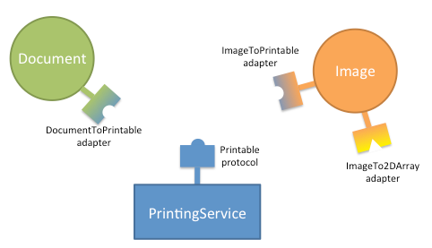

Advanced Topics¶
The preceding sections provide enough information for you to use traits for manifestly-typed attributes, with initialization and validation. This section describes the advanced features of the Traits package
Initialization and Validation Revisited¶
The following sections present advanced topics related to the initialization and validation features of the Traits package.
- Dynamic initialization
- Overriding default values
- Reusing trait definitions
- Trait attribute definition strategies
Dynamic Initialization¶
When you define trait attributes using predefined traits, the Trait() factory function or trait handlers, you typically specify their default values statically. You can also define a method that dynamically initializes a trait attribute the first time that the attribute value is accessed. To do this, you define a method on the same class as the trait attribute, with a name based on the name of the trait attribute:
-
_name_default()¶
This method initializes the name trait attribute, returning its initial value. The method overrides any default value specified in the trait definition.
It is also possible to define a dynamic method for the default value in a trait type subclass (get_default_value()). However, using a _name_default() method avoids the overhead of subclassing a trait.
Overriding Default Values in a Subclass¶
Often, a subclass must override a trait attribute in a parent class by providing a different default value. You can specify a new default value without completely re-specifying the trait definition for the attribute. For example:
# override_default.py -- Example of overriding a default value for
# a trait attribute in a subclass
from traits.api import HasTraits, Range, Str
class Employee(HasTraits):
name = Str
salary_grade = Range(value=1, low=1, high=10)
class Manager(Employee):
salary_grade = 5
In this example, the salary_grade of the Employee class is a range from 1 to 10, with a default value of 1. In the Manager subclass, the default value of salary_grade is 5, but it is still a range as defined in the Employee class.
Reusing Trait Definitions¶
As mentioned in Defining Traits: Initialization and Validation, in most cases, traits are defined in-line in attribute definitions, but they can also be defined independently. A trait definition only describes the characteristics of a trait, and not the current value of a trait attribute, so it can be used in the definition of any number of attributes. For example:
# trait_reuse.py --- Example of reusing trait definitions
from traits.api import HasTraits, Range
coefficient = Range(-1.0, 1.0, 0.0))
class quadratic(HasTraits):
c2 = coefficient
c1 = coefficient
c0 = coefficient
x = Range(-100.0, 100.0, 0.0)
In this example, a trait named coefficient is defined externally to the class quadratic, which references coefficient in the definitions of its trait attributes c2, c1, and c0. Each of these attributes has a unique value, but they all use the same trait definition to determine whether a value assigned to them is valid.
Trait Attribute Definition Strategies¶
In the preceding examples in this guide, all trait attribute definitions have bound a single object attribute to a specified trait definition. This is known as “explicit” trait attribute definition. The Traits package supports other strategies for defining trait attributes. You can associate a category of attributes with a particular trait definition, using the trait attribute name wildcard. You can also dynamically create trait attributes that are specific to an instance, using the add_trait() method, rather than defined on a class. These strategies are described in the following sections.
Trait Attribute Name Wildcard¶
The Traits package enables you to define a category of trait attributes associated with a particular trait definition, by including an underscore (‘_’) as a wildcard at the end of a trait attribute name. For example:
# temp_wildcard.py --- Example of using a wildcard with a Trait
# attribute name
from traits.api import Any, HasTraits
class Person(HasTraits):
temp_ = Any
This example defines a class Person, with a category of attributes that have
names beginning with temp, and that are defined by the Any trait. Thus, any
part of the program that uses a Person instance can reference attributes such as
tempCount, temp_name, or temp_whatever, without having to explicitly
declare these trait attributes. Each such attribute has None as the initial
value and allows assignment of any value (because it is based on the Any trait).
You can even give all object attributes a default trait definition, by specifying only the wildcard character for the attribute name:
# all_wildcard.py --- Example of trait attribute wildcard rules
from traits.api import Any, HasTraits, Int, Str
class Person ( HasTraits ):
# Normal, explicitly defined trait:
name = Str
# By default, let all traits have any value:
_ = Any
# Except for this one, which must be an Int:
age = Int
"""
>>> bill = Person()
>>> # These assignments should all work:
>>> bill.name = 'William'
>>> bill.address = '121 Drury Lane'
>>> bill.zip_code = 55212
>>> bill.age = 49
>>> # This should generate an error (must be an Int):
>>> bill.age = 'middle age'
Traceback (most recent call last):
File "all_wildcard.py", line 33, in <module>
bill.age = 'middle age'
File "c:\wrk\src\lib\enthought\traits\\trait_handlers.py", line 163, in error
raise TraitError( object, name, self.info(), value )
TraitError: The 'age' trait of a Person instance must be an integer, but a value
of 'middle age' <type 'str'> was specified.
"""
In this case, all Person instance attributes can be created on the fly and are defined by the Any trait.
Wildcard Rules¶
When using wildcard characters in trait attribute names, the following rules are used to determine what trait definition governs an attribute:
- If an attribute name exactly matches a name without a wildcard character, that definition applies.
- Otherwise, if an attribute name matches one or more names with wildcard characters, the definition with the longest name applies.
Note that all possible attribute names are covered by one of these two rules.
The base HasTraits class implicitly contains the attribute definition
_ = Python. This rule guarantees that, by default, all attributes have
standard Python language semantics.
These rules are demonstrated by the following example:
# wildcard_rules.py -- Example of trait attribute wildcard rules
from traits.api import Any, HasTraits, Int, Python
class Person(HasTraits):
temp_count = Int(-1)
temp_ = Any
_ = Python
In this example, the Person class has a temp_count attribute, which must be
an integer and which has an initial value of -1. Any other attribute with a name
starting with temp has an initial value of None and allows any value to be
assigned. All other object attributes behave like normal Python attributes
(i.e., they allow any value to be assigned, but they must have a value assigned
to them before their first reference).
Disallow Object¶
The singleton object Disallow can be used with wildcards to disallow all attributes that are not explicitly defined. For example:
# disallow.py --- Example of using Disallow with wildcards
from traits.api import \
Disallow, Float, HasTraits, Int, Str
class Person (HasTraits):
name = Str
age = Int
weight = Float
_ = Disallow
In this example, a Person instance has three trait attributes:
- name: Must be a string; its initial value is ‘’.
- age: Must be an integer; its initial value is 0.
- weight: Must be a float; its initial value is 0.0.
All other object attributes are explicitly disallowed. That is, any attempt to read or set any object attribute other than name, age, or weight causes an exception.
HasTraits Subclasses¶
Because the HasTraits class implicitly contains the attribute definition
_ = Python, subclasses of HasTraits by default have very standard Python
attribute behavior for any attribute not explicitly defined as a trait
attribute. However, the wildcard trait attribute definition rules make it easy
to create subclasses of HasTraits with very non-standard attribute behavior. Two
such subclasses are predefined in the Traits package: HasStrictTraits and
HasPrivateTraits.
HasStrictTraits¶
This class guarantees that accessing any object attribute that does not have an explicit or wildcard trait definition results in an exception. This can be useful in cases where a more rigorous software engineering approach is employed than is typical for Python programs. It also helps prevent typos and spelling mistakes in attribute names from going unnoticed; a misspelled attribute name typically causes an exception. The definition of HasStrictTraits is the following:
class HasStrictTraits(HasTraits):
_ = Disallow
HasStrictTraits can be used to create type-checked data structures, as in the following example:
class TreeNode(HasStrictTraits):
left = This
right = This
value = Str
This example defines a TreeNode class that has three attributes: left, right, and value. The left and right attributes can only be references to other instances of TreeNode (or subclasses), while the value attribute must be a string. Attempting to set other types of values generates an exception, as does attempting to set an attribute that is not one of the three defined attributes. In essence, TreeNode behaves like a type-checked data structure.
HasRequiredTraits¶
This subclass of HasStrictTraits ensures that any object attribute with
required=True in its metadata must be passed as an argument on object
initialization.
An example of a class with required traits:
class RequiredTest(HasRequiredTraits):
required_trait = Any(required=True)
non_required_trait = Any()
All required traits have to be provided as arguments on creating a new instance:
>>> new_instance = RequiredTest(required_trait=13.0)
Non-required traits can also still be provided as usual:
>>> new_instance = RequiredTest(required_trait=13.0, non_required_trait=14.0)
However, omitting a required trait will raise a TraitError:
>>> new_instance = RequiredTest(non_required_trait=14.0)
traits.trait_errors.TraitError: The following required traits were not
provided: required_trait.
HasPrivateTraits¶
This class is similar to HasStrictTraits, but allows attributes beginning with ‘_’ to have an initial value of None, and to not be type-checked. This is useful in cases where a class needs private attributes, which are not part of the class’s public API, to keep track of internal object state. Such attributes do not need to be type-checked because they are only manipulated by the (presumably correct) methods of the class itself. The definition of HasPrivateTraits is the following:
class HasPrivateTraits(HasTraits):
__ = Any
_ = Disallow
These subclasses of HasTraits are provided as a convenience, and their use is completely optional. However, they do illustrate how easy it is to create subclasses with customized default attribute behavior if desired.
Per-Object Trait Attributes¶
The Traits package allows you to define dynamic trait attributes that are object-, rather than class-, specific. This is accomplished using the add_trait() method of the HasTraits class:
-
add_trait(name, trait)¶
For example:
# object_trait_attrs.py --- Example of per-object trait attributes
from traits.api import HasTraits, Range
class GUISlider (HasTraits):
def __init__(self, eval=None, label='Value',
trait=None, min=0.0, max=1.0,
initial=None, **traits):
HasTraits.__init__(self, **traits)
if trait is None:
if min > max:
min, max = max, min
if initial is None:
initial = min
elif not (min <= initial <= max):
initial = [min, max][
abs(initial - min) >
abs(initial - max)]
trait = Range(min, max, value = initial)
self.add_trait(label, trait)
This example creates a GUISlider class, whose __init__() method can accept a string label and either a trait definition or minimum, maximum, and initial values. If no trait definition is specified, one is constructed based on the max and min values. A trait attribute whose name is the value of label is added to the object, using the trait definition (whether specified or constructed). Thus, the label trait attribute on the GUISlider object is determined by the calling code, and added in the __init__() method using add_trait().
You can require that add_trait() must be used in order to add attributes to a class, by deriving the class from HasStrictTraits (see HasStrictTraits). When a class inherits from HasStrictTraits, the program cannot create a new attribute (either a trait attribute or a regular attribute) simply by assigning to it, as is normally the case in Python. In this case, add_trait() is the only way to create a new attribute for the class outside of the class definition.
Interfaces¶
The Traits package supports declaring and implementing interfaces. An interface is an abstract data type that defines a set of attributes and methods that an object must have to work in a given situation. The interface says nothing about what the attributes or methods do, or how they do it; it just says that they have to be there. Interfaces in Traits are similar to those in Java. They can be used to declare a relationship among classes which have similar behavior but do not have an inheritance relationship. Like Traits in general, Traits interfaces don’t make anything possible that is not already possible in Python, but they can make relationships more explicit and enforced. Python programmers routinely use implicit, informal interfaces (what’s known as “duck typing”). Traits allows programmers to define explicit and formal interfaces, so that programmers reading the code can more easily understand what kinds of objects are actually intended to be used in a given situation.
Defining an Interface¶
To define an interface, create a subclass of Interface:
from traits.api import Interface
class IName(Interface):
def get_name(self):
""" Returns a string which is the name of an object. """
Interface classes serve primarily as documentation of the methods and
attributes that the interface defines. In this case, a class that implements the
IName interface must have a method named get_name(), which takes no arguments
and returns a string. Do not include any implementation code in an interface
declaration. However, the Traits package does not actually check to ensure that
interfaces do not contain implementations.
By convention, interface names have a capital ‘I’ at the beginning of the name.
Implementing an Interface¶
A class declares that it implements one or more interfaces using the
provides() class decorator, which has the signature:
-
traits.has_traits.provides(interface[, interface2, ..., interfaceN])[source]
Interface names beyond the first one are optional. As for all class decorators, the call to provides must occur just before the class definition. For example:
from traits.api import HasTraits, Interface, provides, Str
class IName(Interface):
def get_name(self):
""" Returns a string which is the name of an object. """
@provides(IName)
class Person(HasTraits):
first_name = Str( 'John' )
last_name = Str( 'Doe' )
# Implementation of the 'IName' interface:
def get_name ( self ):
''' Returns the name of an object. '''
name = '{first} {last}'
return name.format(name=self.first_name, last=self.last_name)
You can specify whether the provides() decorator verifies that the class calling it actually implements the interface that it says it does. This is determined by the CHECK_INTERFACES variable, which can take one of three values:
- 0 (default): Does not check whether classes implement their declared interfaces.
- 1: Verifies that classes implement the interfaces they say they do, and logs a warning if they don’t.
- 2: Verifies that classes implement the interfaces they say they do, and raises an InterfaceError if they don’t.
The CHECK_INTERFACES variable must be imported directly from the traits.has_traits module:
import traits.has_traits
traits.has_traits.CHECK_INTERFACES = 1
Using Interfaces¶
You can use an interface at any place where you would normally use a class name.
The most common way to use interfaces is with the
Instance or
Supports traits:
>>> from traits.api import HasTraits, Instance
>>> class Apartment(HasTraits):
... renter = Instance(IName)
>>> william = Person(first_name='William', last_name='Adams')
>>> apt1 = Apartment( renter=william )
>>> print 'Renter is: ', apt1.renter.get_name()
Renter is: William Adams
Using an interface class with an Instance trait definition declares that the
trait accepts only values that implement the specified interface. Using the
Supports traits, if the assigned object does not implement the interface,
the Traits package may automatically substitute an adapter object that
implements the specified interface. See Adaptation for more
information.
Adaptation¶
The adaptation features of Traits have been rewritten in v. 4.4.0 . See the migration guide below for details regarding changes in API.
Adaptation is the process of transforming an object that does not implement a specific interface needed by a client into an object that does. In the adapter pattern, an object is wrapped in a second object, the adapter, that implements the target interface.
Adaptation enables a programming style in which each component or service in an application defines an interface through which it would like to receive information. Objects that need to communicate with the component declare an adapter for that interface, as illustrated in the figure below.
Adaptation allows decoupling the data model from the application components and services: introducing a new component in the application should not require modifying the data objects!
Traits provides a package to make this pattern easy and automatic:
In the traits.adaptation package, adapters from a protocol
(type or interface) to another can be registered with a manager object.
HasTraits classes can either explicitly request to adapt an object to a
protocol, or they can define special traits that automatically invoke
the adaptation manager whenever it is necessary.
For example, if a Supports trait requires
its values to implement
interface IPrintable, and an object is assigned to it which is of
class Image, which does not implement IPrintable, then Traits looks for
an adapter from Image to IPrintable, and if one exists the adapter object
is assigned to the trait. If necessary, a “chain” of adapter objects might be
created, in order to perform the required adaptation.
Main features¶
The main features of the traits.adaptation package are:
Support for Python classes, ABCs, and traits
InterfacesProtocols can be specified using any of those.
Chaining of adapters
Adapters can be chained, i.e., an object can be adapted to a target protocol as long as there is a sequence of adapters that can be used to transform it.
Conditional adaptation
Adaptation of an object to a protocol can be conditional, i.e. it may succeed or fail depending on the state of the object.
Lazy loading
The classes for the adapter, the origin, and the target protocols can be specified as strings, and are only loaded if they are required.
Note on terminology¶
To avoid confusion, let’s define two terms that we will use all the time:
- We say that a class provides a protocol if it is a subclass of the protocol, or if it implements the protocol (if it is an interface)
- We say that a class supports a protocol if it provides the protocol or an adapter object can be built that provides the protocol
Defining Adapters¶
The Adapter class¶
The Traits package provides two classes for defining adapters,
one for Traits adapters, Adapter,
and one for for pure-Python adapters,
PurePythonAdapter. These classes
streamline the process of creating a new adapter class. They have a standard
constructor that does not normally need to be overridden by subclasses. This
constructor accepts one parameter, which is the object to be adapted, and
assigns that object to an adaptee attribute (a trait in the case
of Adapter).
As an adapter writer, you need to take care of the following:
- Declare which interfaces the adapter class implements on behalf of the
object it is adapting. For example, if we are working with Traits
Interfaces, the adapter would be decorated with theprovides()decorator. In the case of Python ABCs, the class would be a subclass of the abstract base class, or be registered with it. - Implement the methods defined in the interfaces declared in the previous step. Usually, these methods are implemented using appropriate members on the adaptee object.
- For Traits adapters, define a trait attribute named adaptee that
declares what type of object it is an adapter for. Usually, this is an
Instancetrait.
The following code example shows a definition of a simple adapter class:
from traits.api import Adapter, Instance, provides
# Declare what interfaces this adapter implements for its client
@provides(IName)
class PersonToIName(Adapter):
# Declare the type of client it supports:
adaptee = Instance(Person)
# Implement the 'IName' interface on behalf of its client:
def get_name ( self ):
name = '{first} {last}'.format(first=self.adaptee.first_name,
last=self.adaptee.last_name)
return name
Registering adapters¶
Once an adapter class has been defined, it has to be registered with the
adaptation manager using the register_factory()
function.
The signature of register_factory() is:
-
traits.adaptation.api.register_factory(adapter_class, from_protocol, to_protocol)[source]
The register_factory() function
takes as first argument
the adapter class (or an adapter factory), followed
by the protocol to be adapted (the one provided by the adaptee,
from_protocol), and the protocol that it provides
(to_protocol).
This is the example from the previous section, were the adapter is registered:
from traits.adaptation.api import Adapter, Instance, provides
# Declare what interfaces this adapter implements for its client
@provides(IName)
class PersonToIName(Adapter):
# Declare the type of client it supports:
adaptee = Instance(Person)
# Implement the 'IName' interface on behalf of its client:
def get_name ( self ):
name = '{first} {last}'.format(first=self.adaptee.first_name,
last=self.adaptee.last_name)
return name
# ... somewhere else at application startup.
register_factory(PersonToIName, Person, IName)
Adapter factories, and conditional adaptation¶
The first argument to the register_factory()
function needs not be an adapter class, it can be, more generally, an
adapter factory.
An adapter factory can be any callable that accepts one positional argument, the adaptee object, and returns an adapter or None if the adaptation was not possible. Adapter factories allow flexibility in the adaptation process, as the result of adaptation may vary depending on the state of the adaptee object.
Conditional adaptation¶
A common use of adapter factories is to allow adaptation only if the state of the adaptee object allows it. The factory returns an adapter object if adaptation is possible, or None if it is not.
In the following example, a numpy.ndarray object can be adapted to provide
an IImage protocol only if the number of dimensions is 2. (For
illustration, this example uses Python ABCs rather than Traits Interfaces.)
import abc
import numpy
from traits.api import Array, HasTraits
from traits.adaptation.api import adapt, Adapter, register_factory
class ImageABC(object):
__metaclass__ = abc.ABCMeta
class NDArrayToImage(Adapter):
adaptee = Array
# Declare that NDArrayToImage implements ImageABC.
ImageABC.register(NDArrayToImage)
def ndarray_to_image_abc(adaptee):
""" An adapter factory from numpy arrays to the ImageABC protocol."""
if adaptee.ndim == 2:
return NDArrayToImage(adaptee=adaptee)
return None
# ... somewhere else at application startup
register_factory(ndarray_to_image_abc, numpy.ndarray, ImageABC)
# Try to adapt numpy arrays to images. The `adapt` function is
# introduced later in the docs, but you can probably guess what it does ;-)
# This adaptation fails, as the array is 1D
image = adapt(numpy.ndarray([1,2,3]), ImageABC, default=None)
assert image == None
# This succeeds.
image = adapt(numpy.array([[1,2],[3,4]]), ImageABC)
assert isinstance(image, NDArrayToImage)
Requesting an adapter¶
The adapt function¶
Adapter classes are defined as described in the preceding sections, but you do not explicitly create instances of these classes.
Instead, the function adapt() is
used, giving the object that needs to be adapted and the target protocol.
For instance, in the example in the Conditional adaptation section, a 2D numpy array is adapted to an ImageABC protocol with
image = adapt(numpy.array([[1,2],[3,4]]), ImageABC)
In some cases, no single adapter class is registered that adapts the object to the required interface, but a series of adapter classes exist that, together, perform the required adaptation. In such cases, the necessary set of adapter objects are created, and the “last” link in the chain, the one that actually implements the required interface, is returned.
When a situation like this arises, the adapted object assigned to the trait
always contains the smallest set of adapter objects needed to adapt the
original object. Also, more specific adapters are preferred over less specific
ones. For example, let’s suppose we have a class Document and a subclass
HTMLDocument. We register two adapters to an interface IPrintable,
DocumentToIPrintable and HTMLDocumentToIPrintable. The call
html_doc = HTMLDocument()
printable = adapt(html_doc, IPrintable)
will return an instance of the HTMLDocumentToIPrintable adapter, as it
is more specific than DocumentToIPrintable.
If no single adapter and no adapter chain can be constructed for the requested
adaptation, an AdaptationError
is raised. Alternatively, one can specify a default value to be returned
in this case:
printable = adapt(unprintable_doc, IPrintable, default=EmptyPrintableDoc())
Using Traits interfaces¶
An alternative syntax to create adapters when using Traits Interfaces is to use the interface class as an adapter factory, for example
printable = IPrintable(html_doc, None)
is equivalent to
printable = adapt(html_doc, IPrintable, default=None)
(the default argument, None, is optional).
Using the Supports and AdaptsTo traits¶
Using the terminology introduced in this section, we can say that the
Instance trait accepts values that provide the specified protocol.
Traits defines two additional traits that accept values that support a given protocol (they provide it or can be adapted to it) instead:
- The
Supportstrait accepts values that support the specified protocol. The value of the trait after assignment is the possibly adapted value (i.e., it is the original assigned value if that provides the protocol, or is an adapter otherwise). - The
AdaptsTotrait also accepts values that support the specified protocol. UnlikeSupports,AdaptsTostores the original, unadapted value.
If your application works with adaptation, it is natural to use the
Supports trait in place of the Instance one in most cases. This
will allow that application to be extended by adaptation in the future
without changing the existing code, without having to invoke adaptation
explicitly in your code.
For example, a Traits object can be written against the IPrintable
interface and be open to extensions by adaptation as follows:
from traits.api import (Adapter, HasTraits, Interface, List, provides,
register_factory, Str, Supports)
class IPrintable(Interface):
def get_formatted_text(self, n_cols):
""" Return text formatted with the given number of columns. """
class PrintQueue(HasTraits):
# This is the key part of the example: we declare a list of
# items that provide or can be adapted to IPrintable
queue = List(Supports(IPrintable))
def is_empty(self):
return len(self.queue) == 0
def push(self, printable):
self.queue.append(printable)
def print_next(self):
printable = self.queue.pop(0)
# The elements from the list are guaranteed to provide
# IPrintable, so we can call the interface without worrying
# about adaptation.
lines = printable.get_formatted_text(n_cols=20)
print('-- Start document --')
print('\n'.join(lines))
print('-- End of document -\n')
class TextDocument(HasTraits):
""" A text document. """
text = Str
@provides(IPrintable)
class TextDocumentToIPrintable(Adapter):
""" Adapt TextDocument and provide IPrintable. """
def get_formatted_text(self, n_cols):
import textwrap
return textwrap.wrap(self.adaptee.text, n_cols)
# ---- Application starts here.
# Register the adapter.
register_factory(TextDocumentToIPrintable, TextDocument, IPrintable)
# Create two text documents.
doc1 = TextDocument(text='very very long text the will bore you for sure')
doc2 = TextDocument(text='once upon a time in a far away galaxy')
# The text documents can be pushed on the print queue; in the process,
# they are automatically adapted by Traits.
print_queue = PrintQueue()
print_queue.push(doc1)
print_queue.push(doc2)
while not print_queue.is_empty():
print_queue.print_next()
This scripts produces this output:
-- Start document --
very very long text
the will bore you
for sure
-- End of document -
-- Start document --
once upon a time in
a far away galaxy
-- End of document -
Implementation details¶
The algorithm for finding a sequence of adapters adapting an object adaptee
to a protocol to_protocol is based on a weighted graph.
Nodes on the graphs are protocols (types or interfaces).
Edges are adaptation offers that connect a offer.from_protocol to a
offer.to_protocol.
Edges connect protocol A to protocol B and are weighted by two
numbers in this priority:
- a unit weight (1) representing the fact that we use 1 adaptation
offer to go from
AtoB - the number of steps up the type hierarchy that we need to take
to go from
Atooffer.from_protocol, so that more specific adapters are always preferred
The algorithm finds the shortest weighted path between adaptee
and to_protocol. Once a candidate path is found, it tries to
create the chain of adapters using the factories in the adaptation offers
that compose the path. If this fails because of conditional
adaptation (i.e., an adapter factory returns None), the path
is discarded and the algorithm looks for the next shortest path.
Cycles in adaptation are avoided by only considering path were every adaptation offer is used at most once.
Migration guide¶
The implementation of the adaptation mechanism changed in Traits 4.4.0 from one based on PyProtocols to a new, smaller, and more robust implementation.
Code written against traits.protocols will not work any longer as the
traits.protocols API has been removed in Traits 5.0.0 .
This is a list of replacements for the old API:
traits.protocols.api.AdaptationFailureUse
traits.api.AdaptationErrorinstead.traits.api.adapts()Use the
traits.api.register_factory()function.implements()Use the
traits.api.provides()decorator instead.traits.protocols.api.declareAdapter()Use the function
traits.api.register_factory(), or the functiontraits.adaptation.api.register_offer()instead. It is no longer necessary to distinguish between “types”, “protocols”, and “objects”.traits.protocols.api.declareImplementation()This function was used occasionally to declare that an arbitrary type (e.g.,
dict) implements an interface. Users that use Python ABCs can use theregistermethod for achieving the same result. Otherwise, use the functiontraits.adaptation.api.register_provides()that declares a “null” adapter to adapt the type to the interface.Testing if a class is an Interface
issubclass(klass, Interface)is not reliable, usetraits.api.isinterface()instead
Gotchas¶
- The adaptation mechanism does not explicitly support old-style classes.
Adaptation might work in particular cases but is not guaranteed to work
correctly in situations involving old-style classes. When used with Traits,
the classes involved in adaptation are typically subclasses of
HasTraits, in which case this is not an issue. - The methods
register_factory(),adapt(), etc. use a global adaptation manager, which is accessible through the functionget_global_adaptation_manager(). The traits automatic adaptation features also use the global manager. Having a global adaptation manager can get you into trouble, for the usual reasons related to having a global state. If you want to have more control over adaptation, we recommend creating a newAdaptationManagerinstance, use it directly in your application, and set it as the global manager usingset_global_adaptation_manager(). A common issue with the global manager arises in unittesting, where adapters registered in one test influence the outcome of other tests downstream. Tests relying on adaptation should make sure to reset the state of the global adapter usingreset_global_adaptation_manager().
Recommended readings about adaptation¶
This is a list of interesting readings about adaptation and the adapter pattern outside of Traits:
- PyProtocols,
a precursor of
traits.adaptation - PEP 246 on object adaptation
- Article about adapters in Eclipse plugins
Property Traits¶
The predefined Property() trait factory function defines a Traits-based version of a Python property, with “getter” and “setter” methods. This type of trait provides a powerful technique for defining trait attributes whose values depend on the state of other object attributes. In particular, this can be very useful for creating synthetic trait attributes which are editable or displayable in a TraitUI view.
Property Factory Function¶
The Property() function has the following signature:
-
traits.adaptation.api.Property([fget=None, fset=None, fvalidate=None, force=False, handler=None, trait=None, **metadata])¶
All parameters are optional, including the fget “getter”, fvalidate “validator” and fset “setter” methods. If no parameters are specified, then the trait looks for and uses methods on the same class as the attribute that the trait is assigned to, with names of the form _get_name(), _validate_name() and _set_name(), where name is the name of the trait attribute.
If you specify a trait as either the fget parameter or the trait parameter, that trait’s handler supersedes the handler argument, if any. Because the fget parameter accepts either a method or a trait, you can define a Property trait by simply passing another trait. For example:
source = Property( Code )
This line defines a trait whose value is validated by the Code trait, and whose getter and setter methods are defined elsewhere on the same class.
If a Property trait has only a getter function, it acts as read-only; if it has only a setter function, it acts as write-only. It can lack a function due to two situations:
- A function with the appropriate name is not defined on the class.
- The force option is True, (which requires the Property() factory function to ignore functions on the class) and one of the access functions was not specified in the arguments.
Caching a Property Value¶
In some cases, the cost of computing the value of a property trait attribute may be very high. In such cases, it is a good idea to cache the most recently computed value, and to return it as the property value without recomputing it. When a change occurs in one of the attributes on which the cached value depends, the cache should be cleared, and the property value should be recomputed the next time its value is requested.
One strategy to accomplish caching would be to use a private attribute for the cached value, and notification listener methods on the attributes that are depended on. However, to simplify the situation, Property traits support a @cached_property decorator and depends_on metadata. Use @cached_property to indicate that a getter method’s return value should be cached. Use depends_on to indicate the other attributes that the property depends on.
For example:
# cached_prop.py -- Example of @cached_property decorator
from traits.api import HasPrivateTraits, List, Int,\
Property, cached_property
class TestScores ( HasPrivateTraits ):
scores = List( Int )
average = Property( depends_on = 'scores' )
@cached_property
def _get_average ( self ):
s = self.scores
return (float( reduce( lambda n1, n2: n1 + n2, s, 0 ) )
/ len( s ))
The @cached_property decorator takes no arguments. Place it on the line preceding the property’s getter method.
The depends_on metadata attribute accepts extended trait references, using the same syntax as the on_trait_change() method’s name parameter, described in The name Parameter. As a result, it can take values that specify attributes on referenced objects, multiple attributes, or attributes that are selected based on their metadata attributes.
Persistence¶
In version 3.0, the Traits package provides __getstate__() and __setstate__() methods on HasTraits, to implement traits-aware policies for serialization and deserialization (i.e., pickling and unpickling).
Pickling HasTraits Objects¶
Often, you may wish to control for a HasTraits subclass which parts of an instance’s state are saved, and which are discarded. A typical approach is to define a __getstate__() method that copies the object’s __dict__ attribute, and deletes those items that should not be saved. This approach works, but can have drawbacks, especially related to inheritance.
The HasTraits __getstate__() method uses a more generic approach, which developers can customize through the use of traits metadata attributes, often without needing to override or define a __getstate__() method in their application classes. In particular, the HasTraits __getstate__() method discards the values of all trait attributes that have the transient metadata attribute set to True, and saves all other trait attributes. So, to mark which trait values should not be saved, you set transient to True in the metadata for those trait attributes. The benefits of this approach are that you do not need to override __getstate__(), and that the metadata helps document the pickling behavior of the class.
For example:
# transient_metadata.py -- Example of using 'transient' metadata
from traits.api import HasTraits, File, Any
class DataBase ( HasTraits ):
# The name of the data base file:
file_name = File
# The open file handle used to access the data base:
file = Any( transient = True )
In this example, the DataBase class’s file trait is marked as transient because it normally contains an open file handle used to access a data base. Since file handles typically cannot be pickled and restored, the file handle should not be saved as part of the object’s persistent state. Normally, the file handle would be re-opened by application code after the object has been restored from its persisted state.
Predefined Transient Traits¶
A number of the predefined traits in the Traits package are defined with transient set to True, so you do not need to explicitly mark them. The automatically transient traits are:
- Constant
- Event
- Read-only and write-only Property traits (See Property Factory Function)
- Shadow attributes for mapped traits (See Mapped Traits)
- Private attributes of HasPrivateTraits subclasses (See HasPrivateTraits)
- Delegate traits that do not have a local value overriding the delegation. Delegate traits with a local value are non-transient, i.e., they are serialized. (See DelegatesTo) You can mark a Delegate trait as transient if you do not want its value to ever be serialized.
Overriding __getstate__()¶
In general, try to avoid overriding __getstate__() in subclasses of HasTraits.
Instead, mark traits that should not be pickled with transient = True
metadata.
However, in cases where this strategy is insufficient, use the following pattern to override __getstate__() to remove items that should not be persisted:
def __getstate__ ( self ):
state = super( XXX, self ).__getstate__()
for key in [ 'foo', 'bar' ]:
if key in state:
del state[ key ]
return state
Unpickling HasTraits Objects¶
The __setstate__() method of HasTraits differs from the default Python behavior in one important respect: it explicitly sets the value of each attribute using the values from the state dictionary, rather than simply storing or copying the entire state dictionary to its __dict__ attribute. While slower, this strategy has the advantage of generating trait change notifications for each attribute. These notifications are important for classes that rely on them to ensure that their internal object state remains consistent and up to date.
Note
If you’re manually creating state dictionaries for consumption by
__setstate__(), you should be aware of an additional implementation detail:
when pickling, the HasTraits __getstate__() method returns a dictionary with
an extra '__traits_version__' key giving the version of Traits used at
pickling time. If this key is not present when unpickling, the HasTraits
__setstate__() method falls back to a compatibility mode and may not restore
the state correctly. For the same reason, if you’re overriding
__getstate__(), you should be careful to make the appropriate super(...,
self).__getstate__() call.
Overriding __setstate__()¶
You may wish to override the HasTraits __setstate__() method, for example for classes that do not need to receive trait change notifications, and where the overhead of explicitly setting each attribute is undesirable. You can override __setstate__() to update the object’s __dict__ directly. However, in such cases, it is important ensure that trait notifications are properly set up so that later change notifications are handled. You can do this in two ways:
- Call the __setstate__() super method (for example, with an empty state dictionary).
- Call the HasTraits class’s private _init_trait_listeners() method; this method has no parameters and does not return a result.
Useful Methods on HasTraits¶
The HasTraits class defines a number of methods, which are available to any class derived from it, i.e., any class that uses trait attributes. This section provides examples of a sampling of these methods. Refer to the Traits API Reference for a complete list of HasTraits methods.
add_trait()¶
This method adds a trait attribute to an object dynamically, after the object has been created. For more information, see Per-Object Trait Attributes.
clone_traits()¶
This method copies trait attributes from one object to another. It can copy specified attributes, all explicitly defined trait attributes, or all explicitly and implicitly defined trait attributes on the source object.
This method is useful if you want to allow a user to edit a clone of an object, so that changes are made permanent only when the user commits them. In such a case, you might clone an object and its trait attributes; allow the user to modify the clone; and then re-clone only the trait attributes back to the original object when the user commits changes.
set()¶
This method takes a list of keyword-value pairs, and sets the trait attribute corresponding to each keyword to the matching value. This shorthand is useful when a number of trait attributes need to be set on an object, or a trait attribute value needs to be set in a lambda function. For example:
person.trait_set(name='Bill', age=27)
The statement above is equivalent to the following:
person.name = 'Bill'
person.age = 27
add_class_trait()¶
The add_class_trait() method is a class method, while the preceding HasTraits methods are instance methods. This method is very similar to the add_trait() instance method. The difference is that adding a trait attribute by using add_class_trait() is the same as having declared the trait as part of the class definition. That is, any trait attribute added using add_class_trait() is defined in every subsequently-created instance of the class, and in any subsequently-defined subclasses of the class. In contrast, the add_trait() method adds the specified trait attribute only to the object instance it is applied to.
In addition, if the name of the trait attribute ends with a ‘_’, then a new (or replacement) prefix rule is added to the class definition, just as if the prefix rule had been specified statically in the class definition. It is not possible to define new prefix rules using the add_trait() method.
One of the main uses of the add_class_trait() method is to add trait attribute definitions that could not be defined statically as part of the body of the class definition. This occurs, for example, when two classes with trait attributes are being defined and each class has a trait attribute that should contain a reference to the other. For the class that occurs first in lexical order, it is not possible to define the trait attribute that references the other class, since the class it needs to refer to has not yet been defined.
This is illustrated in the following example:
# circular_definition.py --- Non-working example of mutually-
# referring classes
from traits.api import HasTraits, Trait
class Chicken(HasTraits):
hatched_from = Trait(Egg)
class Egg(HasTraits):
created_by = Trait(Chicken)
As it stands, this example will not run because the hatched_from attribute references the Egg class, which has not yet been defined. Reversing the definition order of the classes does not fix the problem, because then the created_by trait references the Chicken class, which has not yet been defined.
The problem can be solved using the add_class_trait() method, as shown in the following code:
# add_class_trait.py --- Example of mutually-referring classes
# using add_class_trait()
from traits.api import HasTraits, Trait
class Chicken(HasTraits):
pass
class Egg(HasTraits):
created_by = Trait(Chicken)
Chicken.add_class_trait('hatched_from', Egg)
Performance Considerations of Traits¶
Using traits can potentially impose a performance penalty on attribute access over and above that of normal Python attributes. For the most part, this penalty, if any, is small, because the core of the Traits package is written in C, just like the Python interpreter. In fact, for some common cases, subclasses of HasTraits can actually have the same or better performance than old or new style Python classes.
However, there are a couple of performance-related factors to keep in mind when defining classes and attributes using traits:
- Whether a trait attribute defers its value through delegation or prototyping
- The complexity of a trait definition
If a trait attribute does not defer its value, the performance penalty can be characterized as follows:
- Getting a value: No penalty (i.e., standard Python attribute access speed or faster)
- Setting a value: Depends upon the complexity of the validation tests performed by the trait definition. Many of the predefined trait handlers defined in the Traits package support fast C-level validation. For most of these, the cost of validation is usually negligible. For other trait handlers, with Python-level validation methods, the cost can be quite a bit higher.
If a trait attribute does defer its value, the cases to be considered are:
- Getting the default value: Cost of following the deferral chain. The chain is resolved at the C level, and is quite fast, but its cost is linear with the number of deferral links that must be followed to find the default value for the trait.
- Getting an explicitly assigned value for a prototype: No penalty (i.e., standard Python attribute access speed or faster)
- Getting an explicitly assigned value for a delegate: Cost of following the deferral chain.
- Setting: Cost of following the deferral chain plus the cost of performing the validation of the new value. The preceding discussions about deferral chain following and fast versus slow validation apply here as well.
In a typical application scenario, where attributes are read more often than they are written, and deferral is not used, the impact of using traits is often minimal, because the only cost occurs when attributes are assigned and validated.
The worst case scenario occurs when deferral is used heavily, either for delegation, or for prototyping to provide attributes with default values that are seldom changed. In this case, the cost of frequently following deferral chains may impose a measurable performance detriment on the application. Of course, this is offset by the convenience and flexibility provided by the deferral model. As with any powerful tool, it is best to understand its strengths and weaknesses and apply that understanding in determining when use of the tool is justified and appropriate.

Table of Contents
- Advanced Topics
- Initialization and Validation Revisited
- Interfaces
- Adaptation
- Property Traits
- Persistence
- Useful Methods on HasTraits
- Performance Considerations of Traits